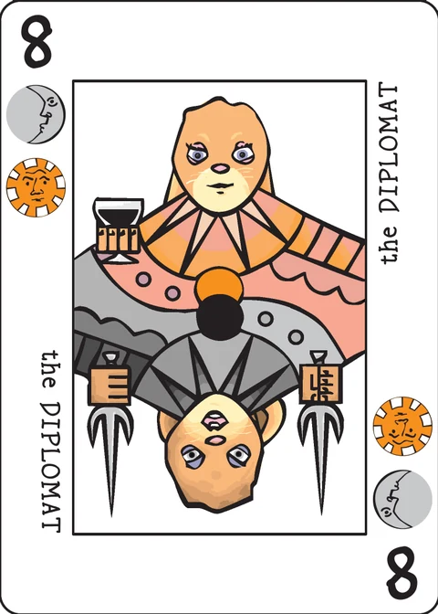

Bharg
a set-making game for 2 players
Object of the game: To bind all the cards in your hand.
Setup
Each player is dealt a hand of seven cards. The dealer then deals one card face up to start a discard pile. If the face up card is an ace, then that card starts the Ace Pile and the dealer continues to deal cards face up until there is a non-ace to start the discard pile.
As the game progresses, there will be two discard piles: one for aces, the other for number cards and crowns. The discard pile for aces is called the Ace Pile.
Game play
On your turn, you may take the top card of the numbers-and-crowns discard pile or the top card of the deck. Then you discard a card.
A bharg set is a group of three or more cards that have one of each suit between them without duplication. A bharg set must have one and only one instance of each suit.
For example: A three card bharg set could consist of 2of Waves and Leaves, 4 of Moons and Suns, and 5 of Daemons and Crowns. A four card bharg set could be the Ace of Moons, Crown of Suns, 7 of Waves and Daemons, and 6 of Leaves and Crowns.
Three cards of the same rank (the three 6s, for example) will always form a bharg set. Sets will be larger than three cards only if they include aces or crowns, which provide one suit each.
A card is bound if it is part of a bharg set or has a suit symbol matching the top card of the Ace Pile. A bound card may be part of a bharg set and also match the top card of the Ace Pile.
If all seven of your cards are bound after you have discarded, then you win the round. Note that you cannot win until you have discarded. If you discard an ace, this may change which cards in your hand are bound and which are not.
A card may be counted as part of at most one bharg set.
Scoring: When you win, you score the value of any unbound cards in your opponent's hand: Aces are worth one, crowns are worth ten, and numbered cards are worth their rank.
With multiple rounds, play continues until one player reaches a target score. 50 is good.
The extended deck
If you want to spice up the game, you can add in some of the extended deck cards. Just shuffle them in at the beginning of the game. I tend to feel that adding both the Pawns and Courts is too much, so we typically play with either but not both.
The Excuse: The Excuse is a blank. It always counts as bound, but it does not help to bind other cards.
Pawns: Pawns contribute all three of their suits to a bharg set and can be bound by an Ace that matches any of those three suits. A player who goes out gets 10 points for an unbound Pawn in their opponent's hand.
Courts: Play as Pawns.
Note on this implementation
The deck: this app plays the basic 36-card deck. The extended-deck options above (Excuse, Pawns, Courts) are not implemented yet.
Boundness: because "a card may be counted as part of at most one bharg set", whether a hand is fully bound is a covering question. The app searches every way of splitting the hand into groups and asks whether each group is either a valid bharg set or a single card matching the Ace Pile — so a hand counts as bound exactly when such a covering exists, and the cards shown with a red outline are the ones no covering can save (those are also the cards your opponent scores).
Pass and play: this is a hidden-hand game, so after each discard the screen is covered with "Player N's turn" until the device is passed on and the hand is revealed.
Credits
Original design: P.D. Magnus. Playtesting: Cristyn Magnus.
These rules are copied from the Bharg page of the Decktet wiki (page revision 12, 26 June 2017) so they can be read offline, under the wiki's CC BY-NC-SA 3.0 licence. Cards by P.D. Magnus, same licence.
Further reading: Bharg at BGG